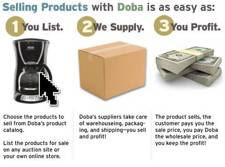

% my $menu;
% $menu = 'default';
<&| /includes/header/index.html, title => 'Zoovy & Doba Drop Shipping', menu => $menu &>
% ## Do not touch anything above this line except for the value of the title var.

Online Fraud Prevention...
Take the offensive in the fight against fraud by taking advantage of Zoovy's new integration with the most sophisticated online fraud prevention service available.
Stops fraud upfront without declining good orders
Provides an easy to use order review cue for merchants who want to review orders with higher than normal risk, rather than automatically decline or approve them.
Customizable to the merchant's business rules and risk tolerances.
Kount provides ecommerce merchants the ability to make rapid and accurate risk assessment decisions, saving valuable time and resources.
Don't wait until your business is hit by the fraud tidal wave, take advantage of Zoovy's new integration with the most sophisticated online fraud prevention service available.
Protect your hard-earned profits by taking advantage of Zoovy's new integration with the most sophisticated online fraud prevention service available.
Kount effectively and efficiently addresses fraud related credit card chargeback issues for online merchants.
In addition, Kount saves merchants valuable time and resources by automating their fraud prevention efforts with the most accurate, predictive and efficient online fraud prevention service available.
Get protection NOW by clicking here and following this simple 2-step process. Zoovy has already done the integration so the most sophisticated fraud prevention solution available to you NOW!
<&| /includes/panel-featured_pdfs-20090707/index.html &>
% ## this include shows random thumbnails with links to Zoovy 1 customer web sites
<&| /includes/panel-featured_stores-20090707/index.html &>
% ## Do not touch anything below this line.
<&| /includes/footer/index.html, menu => $menu &>